Notability 与 GoodNotes 在网课教学中的对比（2021版）
2021年11月2日更新：
Notability 转为订阅制，每年80元，老用户仅获赠一年订阅期。
看来以后新的笔记，都要使用 GoodNotes 了。
2021年11月3日更新：
一天之后，Notability 顶不出压力了，改为承诺老用户已购买的功能始终可用。
在去年春季的时候，我写下了Notability 与 GoodNotes 在网课教学中的对比（2020版），比较了 Notability 和 GoodNotes 两个软件在使用投屏功能进行教学中各自有优点和缺点。
本以为上完暑假课时候，就不需要再上网课了，结果经历了今年年初疫情的反复，直到现在也还没有恢复线下上课。因此又不得不继续上网课。
目前一年过去了，两个软件都进行了大量的更新，例如，Notability 先后增加了投屏功能、工具收藏功能、复制背景功能，GoodNotes 更新了长按自动修正功能等，二者都已经把基本的功能补齐了。从开始各自都有一些不能容忍的问题，到基本上都能够胜任所有的教学内容，目前来看，两者只有一些细节的差异，以及个人喜好的影响。
因此，如果有新人想要尝试的话，只需要任意选择其中一个就可以了。
最近 Notability 大幅降价，我购买的时候是 「本体（含手写识别）」68元，后来又买了「数学识别」18元，一共86元；而现在只需要「本体」25元，「手写识别」6元，「数学识别」6元，一共37元。这样算下来比「GoodNotes」40元还要划算！
这可能是近几年最大幅度的一次降价了。
但是，毕竟还是两个相互竞争的软件，因此两者还是有一些差异性的功能。这里面在比较的时候，「优点」是指该软件有这个功能，而另外一个没有，而且是属于锦上添花的功能，即使没有也可以使用；而「痛点」则是指因为该功能的缺失导致软件使用起来很不方便，甚至会导致直接弃用该软件。
注意：两款软件都在不断更新，并且不断添加新的功能，因此后面所说的可能与您现在所用到的功能并不完全相同。请注意本文的更新日期。
1. Notability 的优点
1.1. 👍👍👍虚线功能
Notability 现在新增了虚线和点线的功能，这个在讲几何画辅助线的时候非常好用。
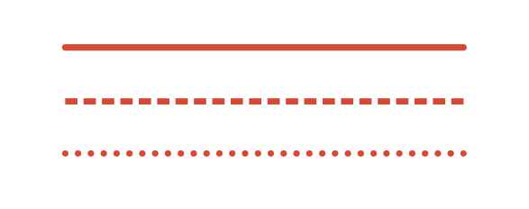
从这个功能，可以看出，Notability 的官方是看到了疫情所导致的学生和老师对于电子化教学及学习的需求。
1.2. 👍👍支持 WebDAV 功能
这点结合坚果云网盘，实现了可用的网络备份和导出的功能。
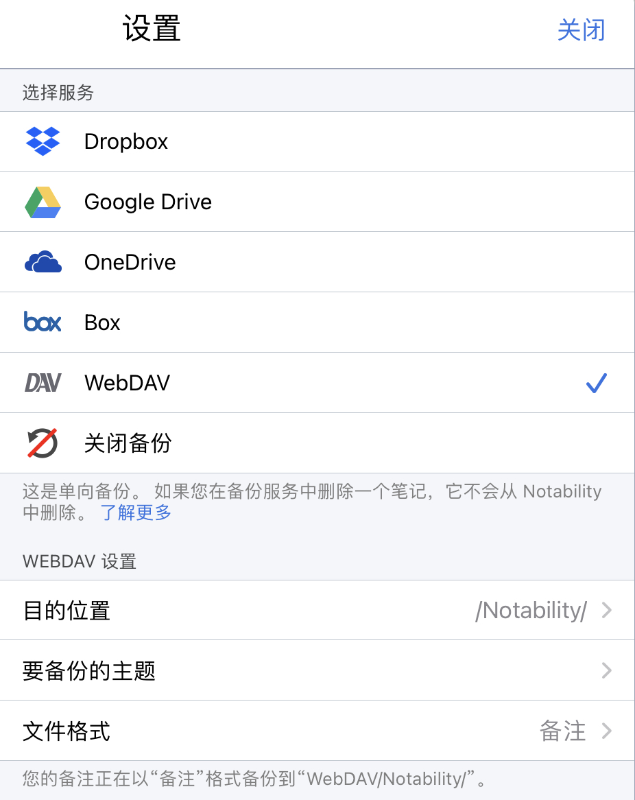
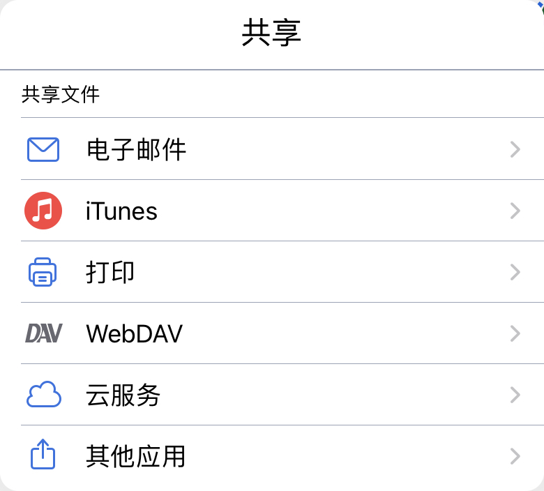
再结合坚果云的电脑端，可以方便地将写好的笔记同步到电脑中。
否则，就只有 Onedrive 可用了。
1.3. 👍👍👍工具收藏功能
之前在没有添加这个功能的时候，Notability 切换笔的颜色的时候是比较麻烦的，每次切换颜色都至少要点2下才可以。而现在可以通过收藏功能，保存常用的笔的粗细、形状和颜色，方便切换。
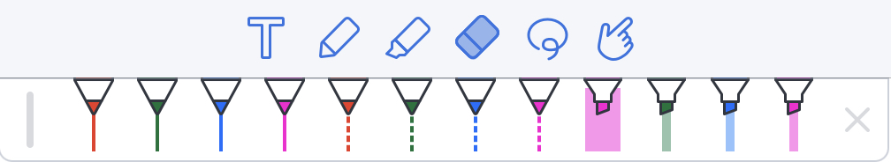
而且，收藏的数量，也从最开始的8个，增加到了现在的12个，基本上满足了我的需要，90%的时间我都不需要再点进去切换颜色了。
2. GoodNotes 的优点
2.1. 👍👍👍折线功能
Notability 能画的图形包括直线段、抛物线、多边形和椭圆，而 GoodNotes 还能画折线段。
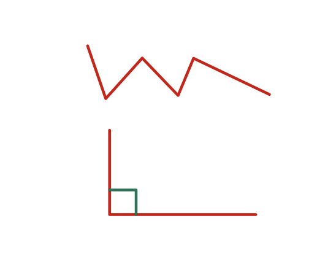
这点在几何作图中非常有用，其中最为常见的一个场景就是标记直角。
2.2. 👍压感可调
在 GoodNotes 中，钢笔工具的压力敏感度和笔尖粗细都是可以调的，这大大增加了钢笔功能的可用性。
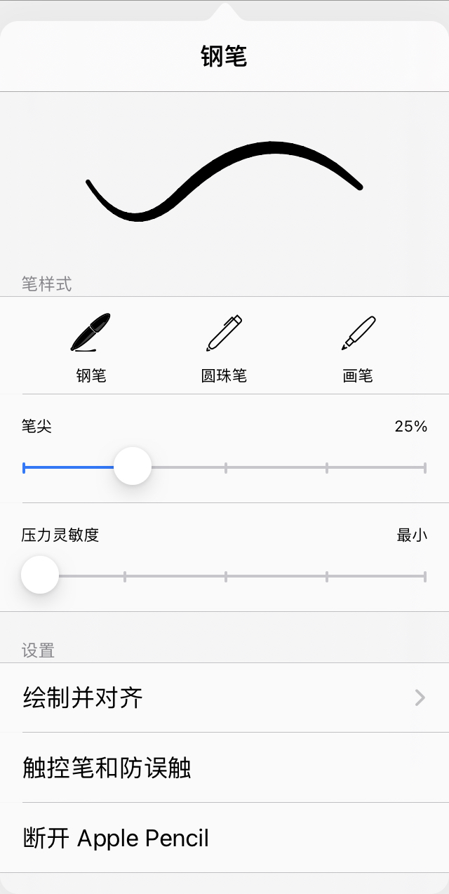
经过多次试验比较，我选择「压力敏感度」最小、「笔尖」25%的钢笔作为日常使用的笔画工具。
作为对比，Notability 只能使用粗细不变的笔画作为主要工具。
2.3. 👍自动填充功能
GoodNotes 支持在画完一个封闭图形之后，自动填充阴影。而且在擦掉图形之后，阴影还是会保留。这样就可以省去使用荧光笔涂满整个区域的麻烦，而且比荧光笔涂地要标准很多。
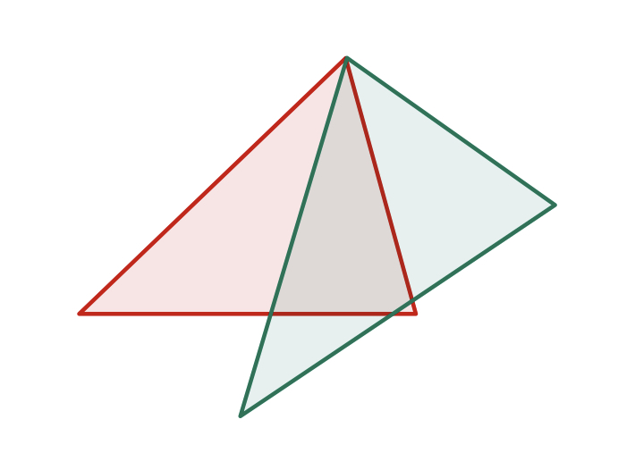
不过可惜的是，默认的阴影颜色太浅了，投屏之后几乎看不清，所以还是太实用。
2.4. 👍激光笔随时可用
这点对于上课来说其实没有什么影响，但是在备课的时候，可以用激光笔随便写画，就不用担心写乱了还得擦的麻烦。
2.5. 👍支持大纲
如果导入的 PDF 是带目录的，则会转换为 GoodNotes 文件中的大纲，这在比较长的文件中跳转起来比较方便。
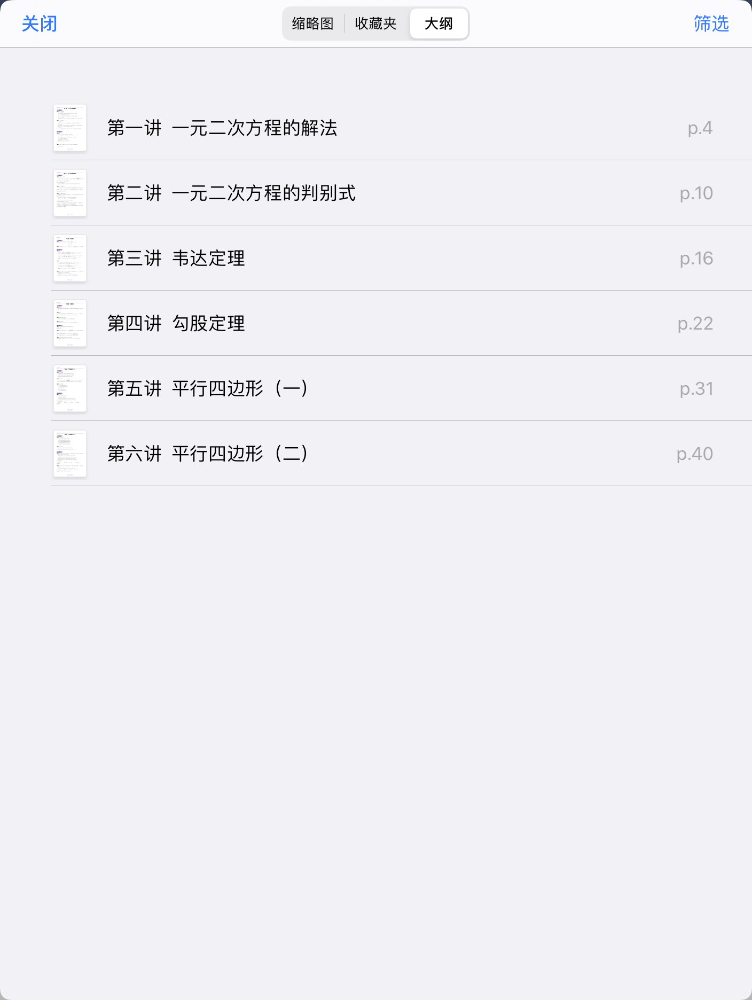
不过由于使用 GoodNotes 的时候都得做成 PPT，每讲一个 PPT 的话，其实也就不需要目录的。所以这个功能目前对于上课来说意义不大。
2.6. 👍支持批量编辑页面
主要是可以批量删除页面。而在 Notability 中，只能一页一页的删。
3. Notability 的痛点
3.1. 👎👎👎Bug
最近，Notability 在投屏的时候有一个奇怪的 bug，就是直接打开一个文件投屏的时候，电脑上显示是黑的；但是如果我开分屏的话，就是同时打开两个文件，却可以正常地显示其中一个文件。
好在这对我来说影响不大，因为我一般是同时开两个文件，左边是提前备课用的教师版，右边是投屏书写的学生版。
3.2. 👎👎文件层级太少
Notability 的文件分级只有三层：分割栏-主题-文件。这个在我看来有些不够用。
因为我的 Notablility 里还有很多别的笔记，因此上课用的讲义我都放在同一个分割栏，这样实际能用的就只有两层了。因此我基本上是一期课占一个主题，然后里面放对应的讲义。但如果由一个课里有很多讲义（例如需要分讲次）那就麻烦了，这个时候我就得单独地把这个课列为一个主题。
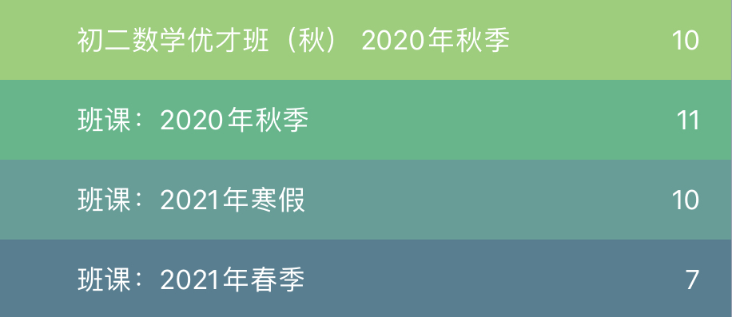
好在，使用 Notability 不需要像 GoodNotes 那样，必须得做成 PPT 的格式，这样对于大部分的课程，每个课就只需要两个文件就足够了。因此即使把一期课中所有的讲义放到一起，也不会乱的分不清。
目前来看还没有什么问题，因为毕竟用的时间还比较短。如果时间长了的话，肯定会显得比较乱。
4. GoodNotes 的痛点
4.1. 👎👎👎Bug
最近，不知道是因为适配最新的 iPadOS 有问题，还是笔记太多导致的问题，GoodNotes 在使用的时候经常卡死。 具体表现为还能够写字，但是橡皮不能使用。如果一段时间不管的话会闪退。而且再进来后会发现，最后写的那些其实并没有保存。
这个 bug 最近触发的频率非常高，几乎到了一天一次的地步。希望能够尽快修复。
4.2. 👎👎👎投影位置不对
如果直接把讲义投屏的话，会发现屏幕显示的和 iPad 上显示的不一样，因此会出现在 iPad 上写的正常，但是屏幕上已经超出边界，导致学生看不到的情况。
因此，使用 GoodNotes 如果用原始的学生版讲义不调格式的话，用起来就非常不方便。所以我在使用的 GoodNotes 的时候，都是提前调整好讲义的格式，一页只放一道题，做成类似 PPT 的形式。
具体的调整参数在上一篇文章中已经写了，这里就不再赘述了。
4.3. 👎👎👎笔画颜色太少
GoodNotes 只能同时显示3种不同的颜色，这个在实际使用时并不够。
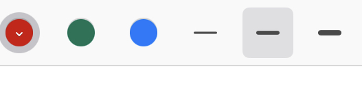
我在讲几何题的时候一般至少会用到4种颜色，这就导致我需要经常切换颜色，非常的麻烦，操作起来也显得手忙脚乱。经常会出现刚切换了一个颜色结果又要切换回去的情况。
4.4. 👎橡皮大小不可调
橡皮只有三种固定的大小，因此才擦除一些比较紧凑的图形的时候，经常会误擦掉其它的图形。这点 Notability 做的就比较好，使用最小的橡皮就可以解决这个问题了。
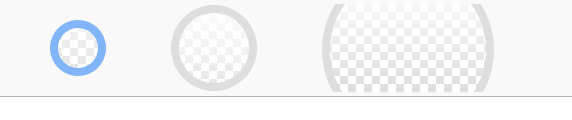
不过 GoodNotes 也不是没有解决问题的方法，主要的原理是当页面放大的时候，橡皮并不会跟着放大。因此如果需要擦一个小东西的话，可以先将整个屏幕放大，然后再擦掉。这点结合 GoodNotes 的投屏不显示缩放功能可以解决这个问题。
5. 我目前的使用方式
可以看出，GoodNotes 优点多，痛点也多，因此具体使用那个软件，主要是看 GoodNotes 的优点是否足够吸引人，以及能否容忍它的痛点。
上面说了这么多，其实对我上课影响最大的就是有两个，一个是 GoodNotes 的折线功能，另外一个是 GoodNotes 的投屏Bug。
因此，如果在课程里有涉及到初中平面几何的部分，我就使用 GoodNotes，然后提前做好 PPT。具体的调整参数在前一篇文章中有写出，这里就不再赘述。
如果整个一期课都没有上述内容的话，比如讲初中开始的代数部分，以及中后期的函数部分，以及高中的内容，我都用 Notability，这样一方面可以省去调整讲义的麻烦，另一方面 Notability 的工具用起来比 GoodNotes 要方便。
-
2020-06-29